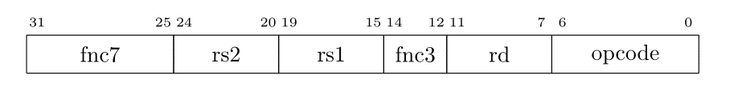
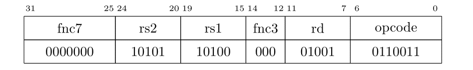

Course (taught and being teached) >>> Current Semester >>> 2022-3B >>> מבוא לארכיטקטורת מחשבים >>> 9 במרץ, 2023 (שקפים 13-24) >>> שפת מכונה
איך שפת הסף אותה ראינו עד עכשיו מקודדת לשפת מכונה? כל מעבד בוחר כמובן קידוד משלו. במעבדי risc הקידוד, ככלל, פשוט הרבה יותר מאשר במעבדי cics.
לדוגמא במעבד שלנו כל פקודה היא ברוחב 32 ביטים (ארבעה בתים).
יתר על כן, יש מספר קטן של פורמטים שונים של פקודות, דבר שמקל על התכנון ומפשט את המעגל.
להלן מבנה-R.

בפקודו במבנה R קוד הפקודה נקבע על-ידי שלושת השדות הבאים: opcode, fnc3, fnc7.
יש מבנים בהם קוד הפקודה הוא רק השדות opcode ו-fnc3.
ויש מבנים בהם קוד הפקודה הוא רק השדה opcode.
ברור שהקודים לשדות נבחרים באופן שאין בלגן.
אנחנו יכולים להסיק ממבנה הפקודה ורוחב השדות (ושמותיהם) שפקודות מטיפוס R יש שלושה אופרנדים שהם אוגרים. 5 ביטים נותנים לנו טווח של 0-31 כצפוי משדה שצריך להכיל מספר אוגר.
rs1 - Register Source 1
rs2 - Register Source 2
rd - Register Desination
לדוגמא. הפקודה add היא, די כצפוי, ממבנה R.
ולכן הקידוד של נאמר
add x9, x20, x21
יהיה כלהלן. 
את הערכים עבור השדות opcode, fnc3 ו-fnc7 צריך להוציא מהתיעוד. אנחנו נצרף קובץ עם כל התעוד הרלוונטי.